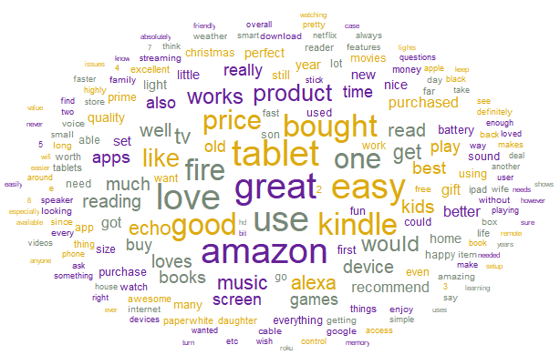
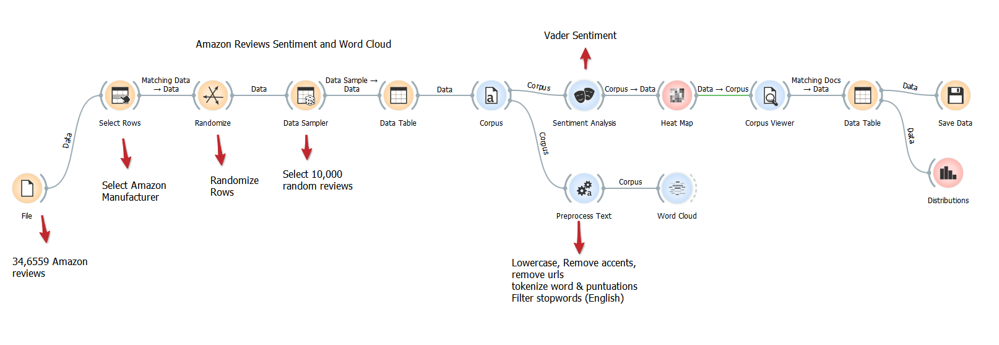
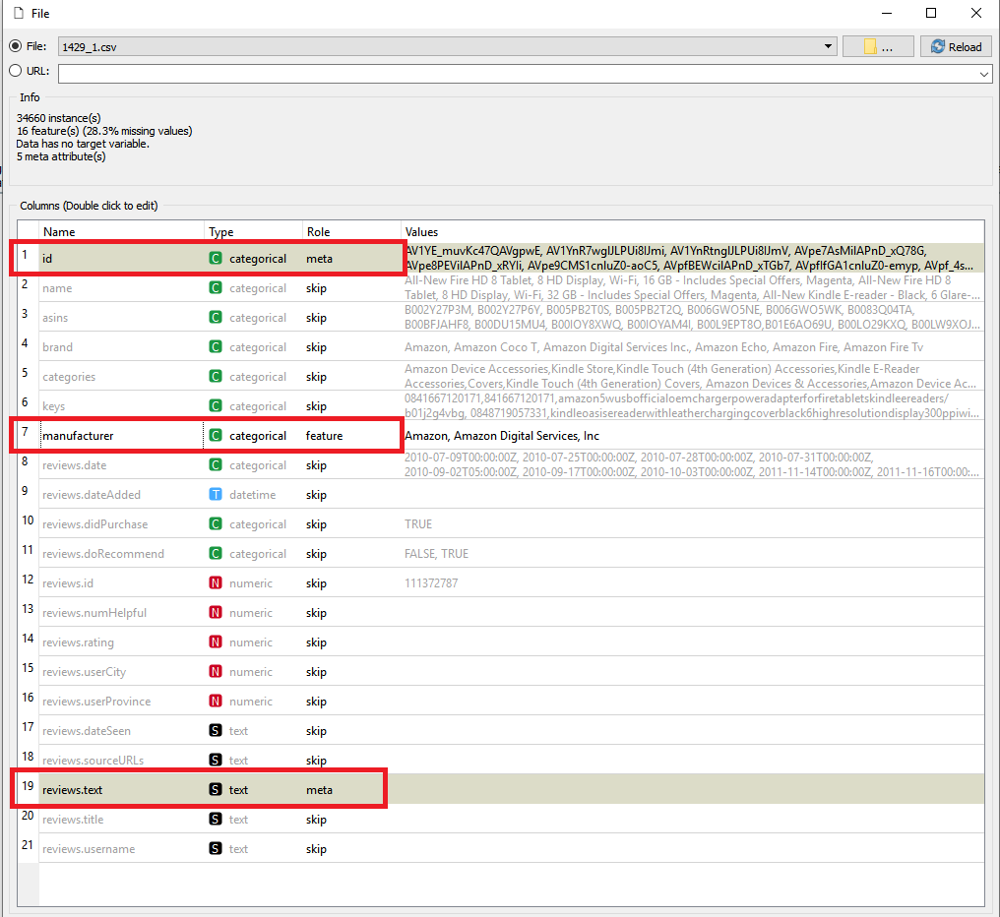
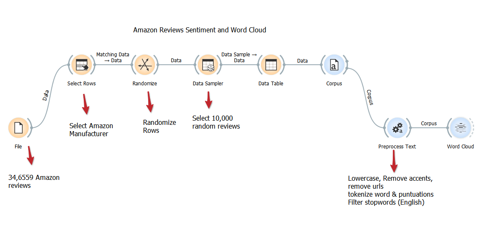
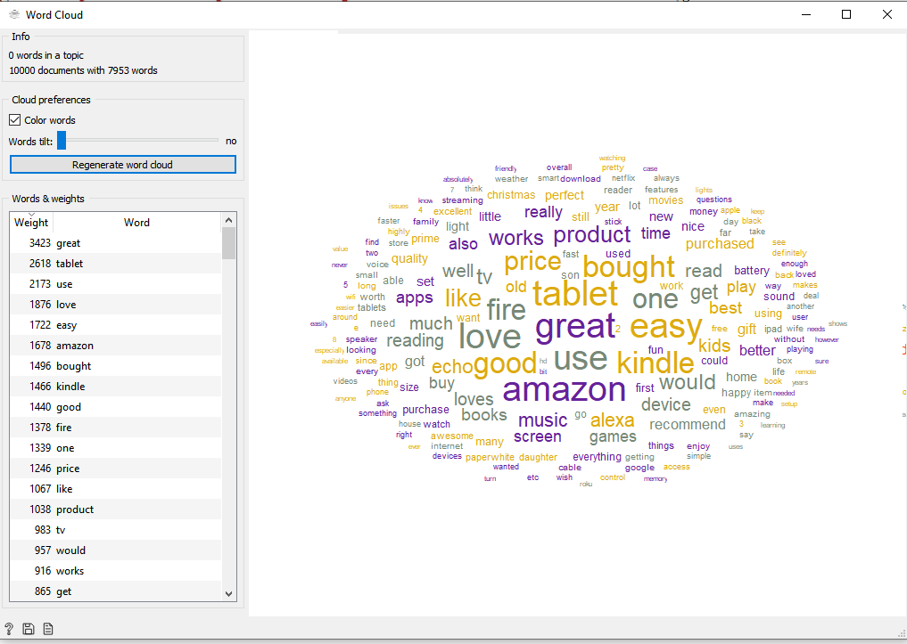
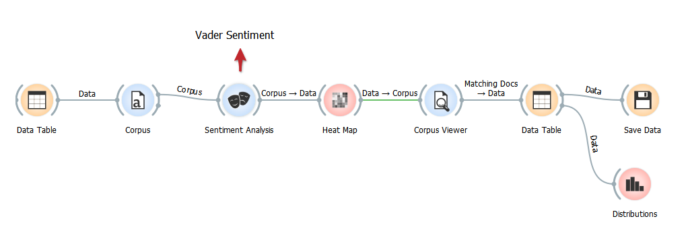
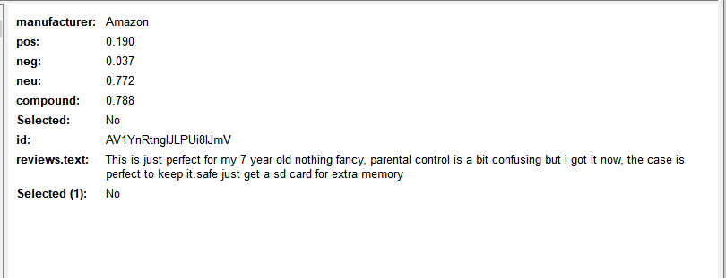
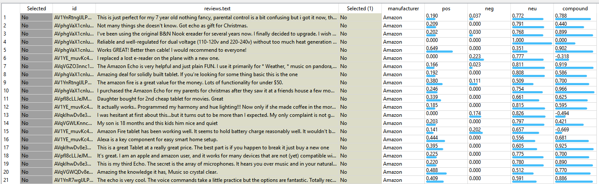
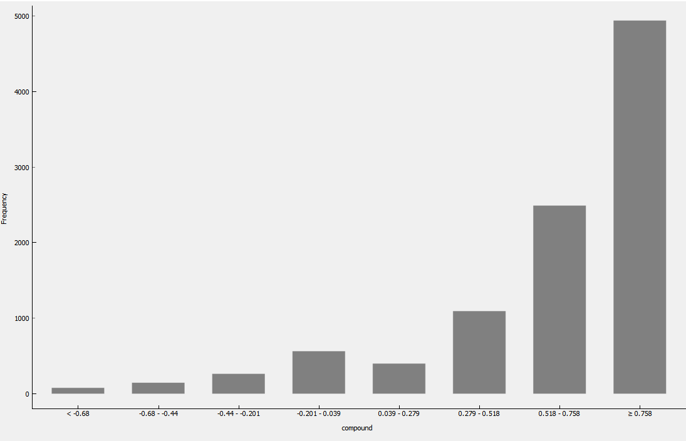
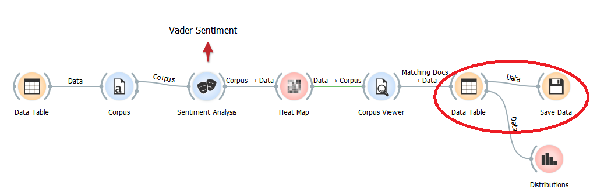

Amazon Reviews Sentiment & Word Cloud

Let’s say you have thousands of reviews for your product or thousands of text comments for a survey that you recently conducted. You want to know if the comment/text is positive, negative or neutral and top words appearing on your text document(s). Additionally, you are expert in data manipulation and can use ‘search’ and ‘find’ Excel functions but do not have the time to sort through each comment or the tedious task of reading each comment and marking positive or negative. On top of that, you do not have prior coding experience not you have the time to learn Python before your next week’s deadline. What do you do?
Well- this “Orange” tool is for you. This analysis was completed less than an hour and no coding experience is needed. But wait... There is more...
it’s all FREE. Let’s go through this step by step. First, you will need to download and install Orange. Add Text analytics add-in if not installed already. Download the data set from Kaggle and save the file locally as CSV.
Below is overview of the Orange diagram

Let's import the file and select 'skip' on all variables except 'id', 'manufacturer', 'reviews_text' and assign the appropriate type for those three variables as highlighted in the image below.

Below image walks you through steps for the word cloud. Here were are selecting manufacturer (Amazon), randomizing rows, selecting 10,000 reviews, data table (which is just there to see if the output from data sampler- not necessary) and converting to corpus. We then use process text to lowercase, remove accents, remove urls, tokenize words and punctuations and filter out stop words.

Here is the complete image of the word cloud. After tokenization and filtering stop words, etc- we have 7,953 words from 10,000 random reviews. Top words appear to be 'great', 'tablet', 'use' and 'love'.

Let’s shift gears and look at the sentiment of the reviews- was the review positive or negative?
For this we will use the vader sentiment algorithm to figure out number of positive, neutral and negative words in the reviews. The algorithm also provides a score called compound score which basically normalizes and appropriately weights it the three sentiments. The score of -1 suggests most extreme negative and +1 suggests extreme positive.

But, before we get to the score, lets take a quick look at the heat map and see if we can cluster the reviews with sentiment and see if any interesting groups pop up.

Upon close examination, we can see that most of the reviews are marked as neutral and the positive and then negative. High compound score reviews are grouped at the top and low ones at the bottom.
Below is an example of one of the review. In this review- 77.2% of the words were neutral, 3.8% negative and 19% positive with a compound score of 78.8%. If you look closely, it makes sense- the parent found the parental control bit confusing (a slightly negative sentiment), the case was perfect (positive sentiment) and overall product was perfect (positive sentiment)

The data table shows that the sentiment analysis went through all 10,000 reviews and scored it. Here is preview of few reviews.

From this point, we can either treat the sentiment/ compound score as a continuous variable and export the file for external analysis or we can create a histogram of the compound score to see the distribution and treat the bin range as discrete variable. Lets take a look at the distribution.

From the distribution, we see that roughly half of the reviews have compound score of >= 75.8% and about 25% of the reviews have compound score between 51.8% - 75.8%

Lastly, we can export/ save the reviews for further analysis if we like.
In conclusion, we looked at the word cloud to see top 100 words appearing the 10,000 reviews, we generated heat map to see like comments and grouped them into a cluster, we used sentiment analysis algorithm to figure out the overall compound score of the review and generated a histogram of the compound score. All this with out any coding.
Possibilities- are endless with text/ sentiment analysis- we can look at survey data, product reviews, restaurant/ hotel reviews, twitter comments, etc...
Overall, Amazon branded products appears to have positive reviews and I would not hesitate to buy one soon.
Here are reference links:
Link to Kaggle data setLink to Orange
Link to vader sentiment documentation